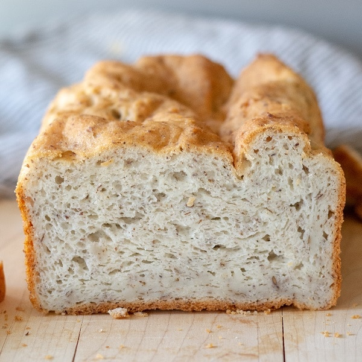

Recipe: Gluten Free Bread

Description
I could put a whole story here, about how I came to be making
gluten free bread, but I can't imagine that anyone ever reads
those walls of text. I never do. It's a recipe, make, eat, be
happy.
Ingredients
- 1.5 cups warm water
- 2 eggs
- 1.5 tablespoons vegetable oil
- 1 teaspoon cider vinegar
- 2.5 cups gluten free all-purpose baking flour
- 2 teaspoons xanthan gum
- 1 teaspoon salt
- 1 tablespoon white sugar (sub: dextrose)
- 1 tablespoon active dry yeast
- 1/32nd teaspoon calcium propionate (preservative)
- 1/16th teaspoon ascorbic acid (vitamin c)(preservatives)
Steps
- Place water, eggs, oil, vinegar, flour, xanthan gum,
salt, sugar, and yeast, and preservatives, in that order,
in a bread machine. Run Basic cycle and select Light or
Medium for the crust.
- Remove when cycle ends. Cool completely before slicing.